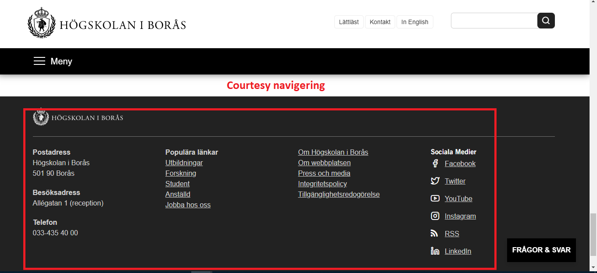

Global navigering finns till för att användaren ska kunna nå hemsidans huvuddelar, medans den lokala navigeringen är till för vissa delar av en hemsida. Skillnaden mellan dessa två är att den globala navigeringen ska finnas tillgänglig hela tiden för att det ska bli enklare för användaren att nå de viktigaste delarna. Den lokala navigeringen finns inte alltid där, utan återfinns på vissa delar av hemsidan.
Courtesy navigering innehåller länkar eller text om saker man vill snabbt vill kunna komma åt. Det kan vara information om öppettider eller kontaktinformation. Dynamisk information som kan finnas på hemsidan kallas supplementary navigering. Denna kan förändras beroende på användarens tidigare sök
